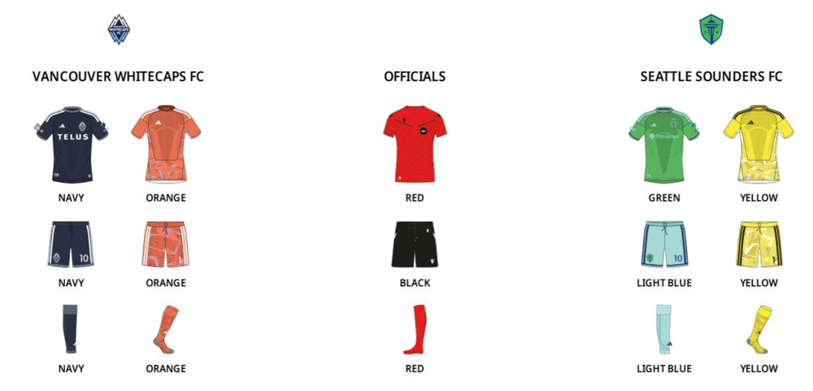
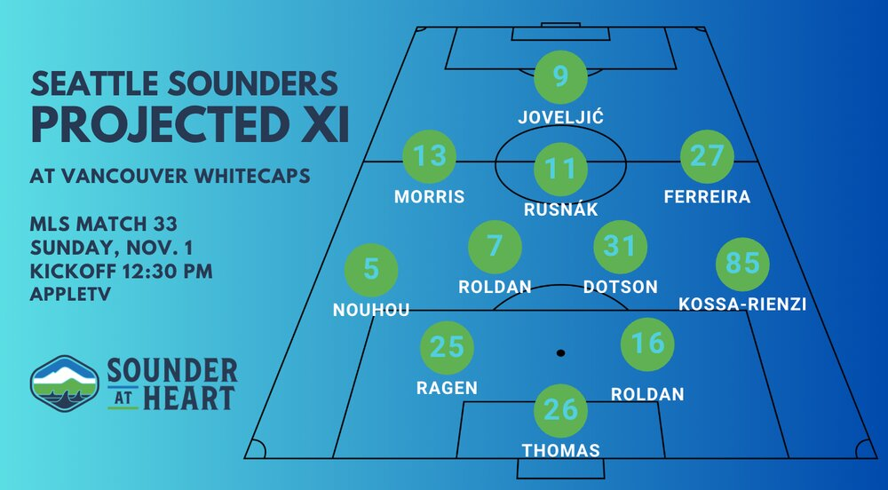

The Seattle Sounders will try to get their season back on track when they visit the Vancouver Whitecaps today at 12:30 PM. The Sounders looked to be cruising toward the playoffs as recently as a couple of weeks ago, but they’ve gone 0–2–2 in their last four to at least open the door to miss the postseason for just the second time in their 18 MLS seasons.
The Whitecaps, meanwhile, seem to have righted their ship after some listless play. They are coming off a 5–1 thrashing of San Diego FC and have now won 2 of 3 to clinch the top seed in the Western Conference.
The Sounders have already enjoyed some success at BC Place this year, having beaten the Whitecaps 3–0 in Concacaf Champions Cup play. Paul Arriola had a brace in that game. The Whitecaps won the most recent meeting, though, when they beat the Sounders 2–0 at Lumen Field on Aug. 16.
Notes
- The Sounders can clinch a spot in the 2027 MLS Playoffs with a win today, combined with the Portland Timbers dropping points.
- The Whitecaps have already clinched the top spot in the Western Conference after FC Dallas drew the Colorado Rapids on Saturday. Although they can both finish on 58 points, the Whitecaps are guaranteed to win have more wins.
- The Sounders are trying to avoid becoming the first team in the history of the Cascadia Cup to fail to register a single point in the regional rivalry. Although the Sounders have twice beaten the Whitecaps this year, both were in the Concacaf Champions Cup and don’t count toward the Cascadia Cup standings.
- The Whitecaps, conversely, are trying to become the first team to win all of their Cascadia Cup games during the MLS era of the regional rivalry.
Absences: Injury, international duty and suspension
Sounders
OUT: Pedro de la Vega, Quad; Yeimar Gómez Andrade, Hamstring; Nikola Petković, Knee
QUESTIONABLE: Danny Musovski, Head
Whitecaps
OUT: Jeevan Badwal, Hamstring; Kenji Cabrera, Foot; Andrés Cubas, Ankle; Rayan Elloumi, Suspended; Belal Halbouni, Knee; Emmanuel Sabbi, Ankle
Recent form
Sounders: LDDLW
Whitecaps: WLWDD
Kit matchup

Officials
Ref: Alexis Da Silva; AR1: Chris Wattam; AR2: Stefan Tanaka-Freundt; 4th: Mathieu Souare; VAR: Kevin Stott; AVAR: Tom Supple
How to Watch
Match date/kickoff time: Sunday, November 1st, 12:30 PM PST
Venue: BC Place, Vancouver, B.C.
Global Streaming English: MLS Season Pass (commentators)
Global Streaming Spanish: MLS Season Pass (commentators)
Local Radio: 950 KJR-AM Seattle, iHeartMedia (Danny Jackson & Steve Zakuani)
Local Spanish Radio: El Rey 1360 AM (Rodriguez, Maqueda, Tapia)
Is this game available to stream for free? No
Will Sounders radio be available as an alternate feed? No
Lineups

Highlights will be posted as the match progresses.
This is Seattle Sounders at Vancouver Whitecaps; watch with us
Sounder at Heart receives a portion of all sales made from links on this page.